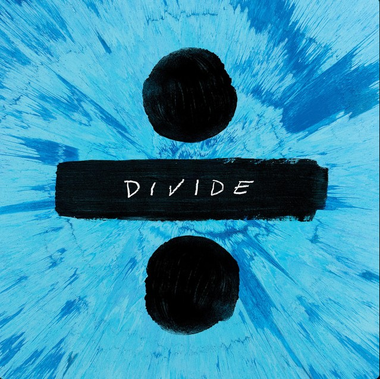

← Voltar para a Galeria
Momentos Inesquecíveis ❤️
Uma viagem através de nossas memórias mais especiais.
Seu navegador não suporta o elemento de áudio.

0:00
0:00
Carregando fotos para o slideshow...